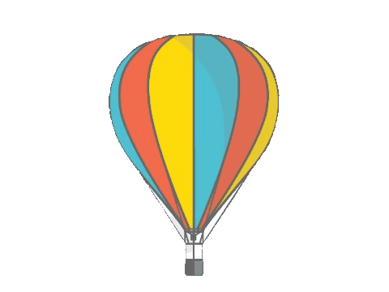
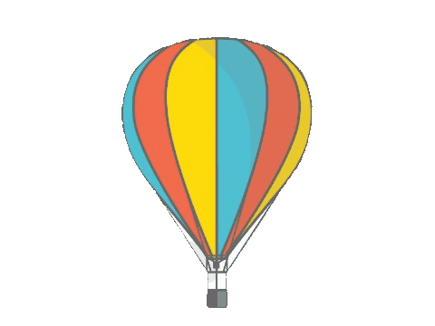

I'm Nandini
a programmer


I'm Nandini Mahalakshmi Kuppachi, a 6th grader at Eisenhower School, and a proud member of the Elite Academically Independent cohort. While not studying, I usually read a mystery book or play chess with my family. My favorite series' are Harry Potter, Narnia, Nancy Drew, and Sherlock Holmes.

I am an amateur coder and am knowledgable in the subject of HTML and CSS coding. I started coding when I was 12 because I showed interest while coding at school. I look forward to making more websites in the future!

I'm an above level percussionist. I can play a xylophone, snare drum, cymbals, tom tom, and more! But, I play the snare drum best. I've played in my school band and Wind Ensemble. Few songs I've performed are Dark Adventure, Indiana Jones, Star Wars, etc!
© 2020 Nandini Kuppachi. All rights reserved.
Credits: